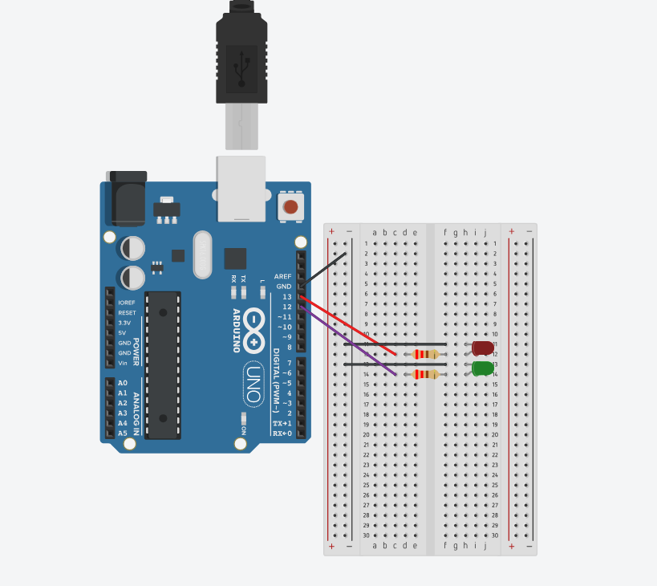
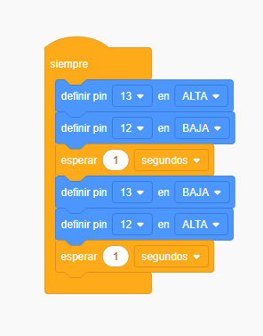

1🔒✓
Iniciación
Práctica 1
Conexión sencilla de LEDs
Monta tu primer circuito: dos LEDs que se turnan para encenderse desde el código. Es la base de todo lo que viene después.
Pista: ver imágenes de conexiones y bloques


Qué vas a aprender
Cómo cerrar un circuito con la placa, qué hace una resistencia limitadora y cómo controlar dos pines digitales con digitalWrite() para que se turnen.
Material
- 1 placa Arduino Uno (R3 o R4 WiFi)
- 1 LED rojo y 1 LED verde
- 2 resistencias de 220 Ω
- Cables de conexión
- 1 protoboard
Montaje
- Coloca los dos LEDs en la protoboard. Fíjate en la pata más larga (ánodo, +) y la más corta (cátodo, −) de cada uno.
- Conecta el pin digital 13 a una resistencia de 220 Ω, y esta al ánodo del LED rojo.
- Conecta el pin digital 12 a otra resistencia de 220 Ω, y esta al ánodo del LED verde.
- Conecta los cátodos de ambos LEDs a GND.
Código
const int ledRojo = 13;
const int ledVerde = 12;
void setup() {
pinMode(ledRojo, OUTPUT);
pinMode(ledVerde, OUTPUT);
}
void loop() {
digitalWrite(ledRojo, HIGH);
digitalWrite(ledVerde, LOW);
delay(1000);
digitalWrite(ledRojo, LOW);
digitalWrite(ledVerde, HIGH);
delay(1000);
}Para comprobar que lo entiendes
Cambia los valores de delay() y observa qué ocurre. ¿Qué pasa si usas dos valores distintos para cada LED? ¿Sabrías hacer que los dos parpadeen muy deprisa?
Termina la tarjeta anterior para desbloquear esta.